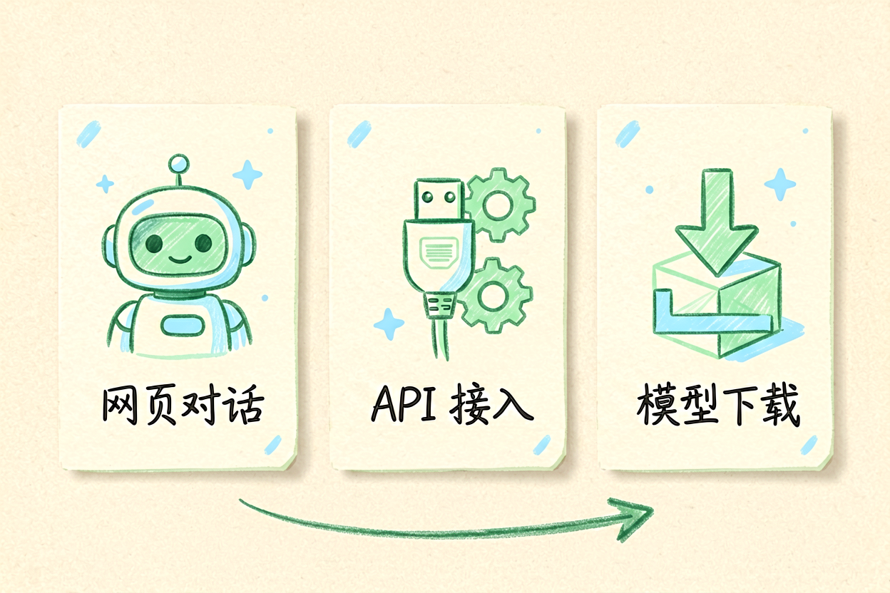

DeepSeek使用教程：从零掌握免费额度与API接入技巧
第一次注册免费账号不知道怎么操作？本文从零讲起，带你掌握网页对话与API接入的核心技巧。
DeepSeek使用教程是本文的核心主题，下面详细介绍如何使用。
DeepSeek使用教程：了解国产大模型

DeepSeek是由深度求索公司开发的国产大模型，以高性价比和优秀的中文能力著称。它的免费额度慷慨，API价格低廉，适合个人用户和中小企业使用。与OpenAI模型相比，DeepSeek在中文理解和生成方面表现更稳定。
新手使用DeepSeek前，先理解它的特点。DeepSeek不是简单的聊天工具，而是一个完整的AI平台，提供网页对话、API接入、模型下载等多种使用方式。根据需求选择合适的使用方式，是高效使用的第一步。
DeepSeek使用教程：网页版与免费额度

访问DeepSeek官网，注册账号后即可获得免费额度。网页版适合日常使用，无需编程即可对话。免费额度包括一定数量的对话次数和Token使用量，足够个人用户日常需求。
进入对话界面后，直接在输入框提问即可。DeepSeek支持中文和英文对话，对中文的理解和生成能力较强。新手建议从简单问题开始，比如「帮我写一封邮件」或「解释什么是机器学习」，熟悉后再尝试复杂任务。
DeepSeek使用教程：API接入

对于开发者，DeepSeek使用教程的重点是API接入。API适合需要批量处理、集成到应用、自动化工作流的场景。注册后在控制台获取API Key，按文档接入即可。
DeepSeek API调用示例：
import requests
response = requests.post(
"https://api.deepseek.com/v1/chat/completions",
headers={"Authorization": "Bearer YOUR_API_KEY"},
json={"model": "deepseek-chat", "messages": [{"role": "user", "content": "你好"}]}
)
print(response.json()["choices"][0]["message"]["content"])DeepSeek使用教程：多轮对话技巧

DeepSeek使用教程的核心是多轮对话技巧。多轮对话能让模型理解上下文，生成更连贯的回复。关键技巧是：每轮对话保持主题一致，补充信息时明确说明，追问时引用前文内容。
参考提示词写作方法，使用结构化提示词。比如「你是一位翻译专家，请翻译以下文本，要求准确流畅，保留原文风格」。多轮对话时，可以在后续消息中说「按照刚才的风格，继续翻译第二段」。
DeepSeek使用教程：注意事项

使用DeepSeek时要注意几个问题。不要依赖API生成关键内容而不验证，AI可能出错。不要重复使用相同提示词，效果会递减。不要过度依赖免费版，重要项目建议升级付费版。
DeepSeek使用教程的重点是掌握核心技巧并持续实践。别让DeepSeek替代你的思考，它只是工具，关键决策仍要自己把关。不要盲目信任AI生成的每一个字。
DeepSeek使用教程：实际应用场景

DeepSeek在实际工作场景中有很多应用。比如写邮件，你可以直接告诉DeepSeek「帮我写一封邮件，通知团队下周五下午举行团队建设活动，地点在公司楼下的餐厅，请大家准时参加」，DeepSeek会生成格式规范、语气得体的邮件。再比如写周报，把本周完成的工作逐项列出，让DeepSeek帮你整理成结构清晰的周报格式。还有一个实用场景是翻译，DeepSeek对中文的理解能力很强，你可以把英文文档粘贴给它，让它翻译成流畅的中文。以上是关于DeepSeek使用教程的完整指南。 别让AI工具替代你的思考，关键决策仍要自己把关。不要盲目信任AI生成的内容。
本文信息核对于 2026-09-07。AI 产品的价格、免费额度与功能变动频繁，实际以各工具官网当前说明为准。